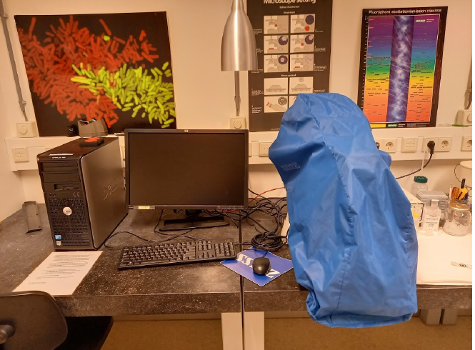
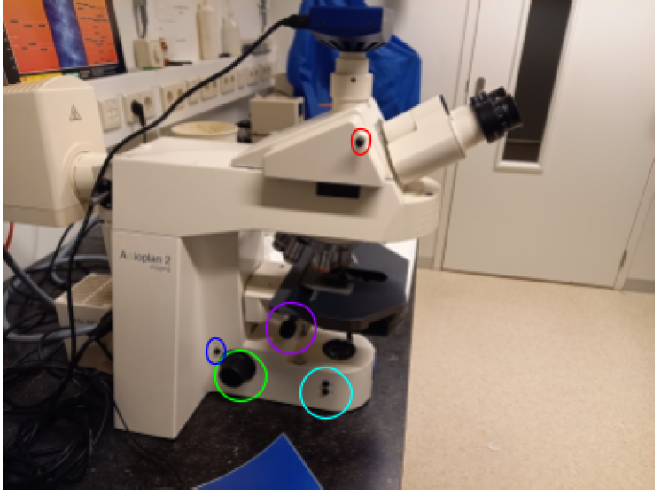
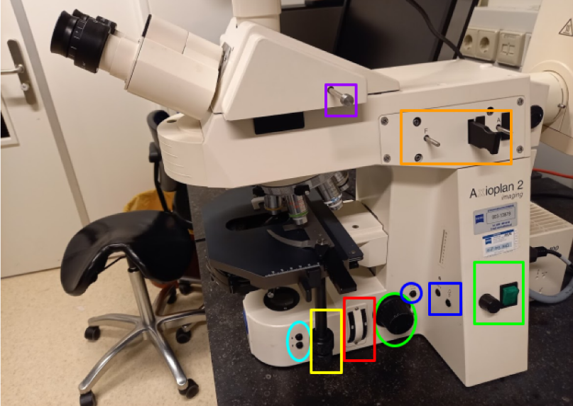
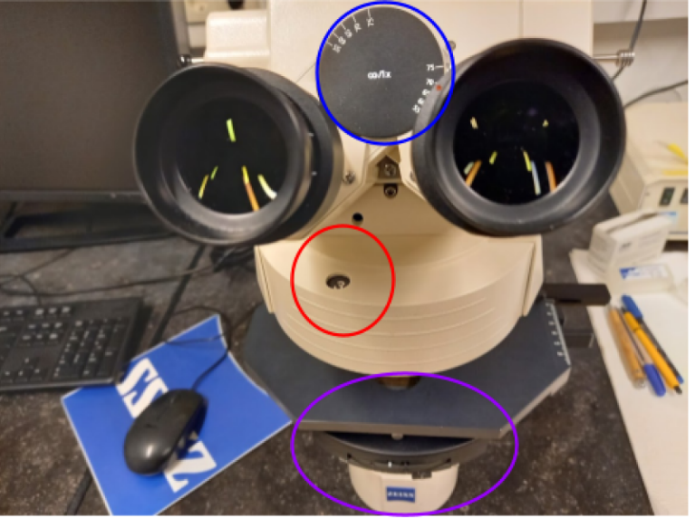
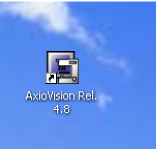
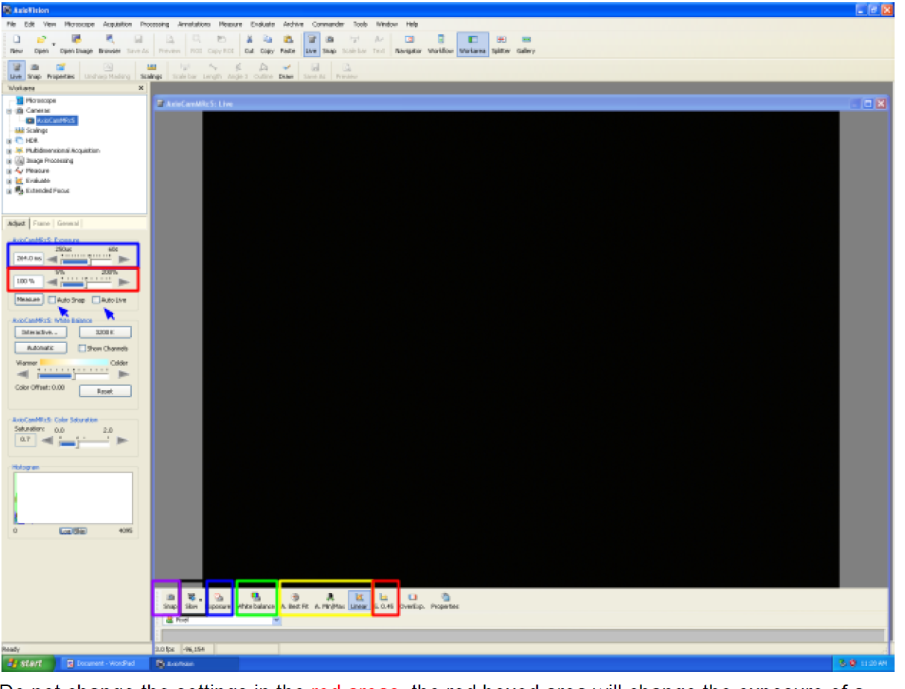
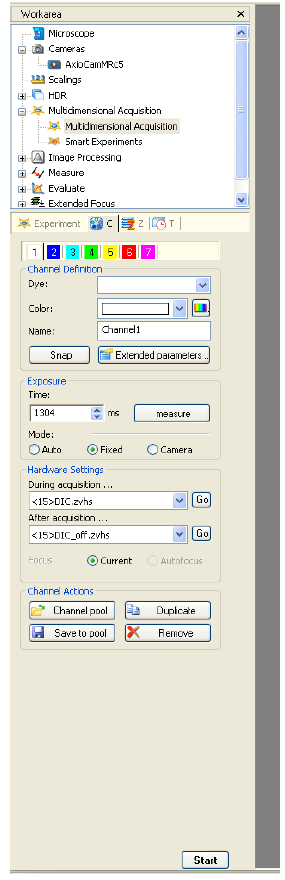
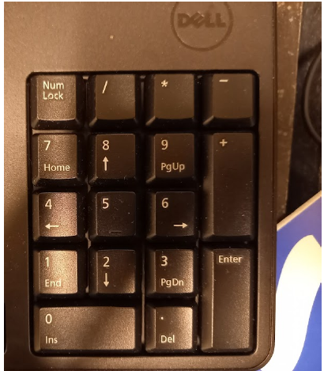

DIC Microscope Manual
Hardware Controls
Left Side Controls
 - Focus Wheel: Main focus control (green) - Focus Mode Switch: Toggle between coarse and fine focus (dark blue) - Sample Exchange Buttons: (cyan) - Lower stage for sample removal - Return to previous focus height - Note: Disable this feature when sample heights vary to prevent objective crashes - Condenser Focus Wheel: (purple) Used for Köhler illumination - Ocular Light Block: Red pin that blocks light to oculars when pushed in
Right Side Controls
 - Focus Controls: - Focus wheel (green oval) - Sample loading positions (cyan) - Fine/Course focus switch (dark blue) - Light Controls: - Power switch with intensity control (green) - Light Manager buttons for 3200K illumination - Stage Control: XY positioning (yellow) - Filter Controls: - Neutral density filter wheels (red) - Fluorescence light path adjustments (orange) - Beam path switch (purple)

Illumination System
Light Manager Features
- Left button: Toggle between 3200K and manual control
- Right button: Switch between brightfield and fluorescence
- Neutral density filters available for intensity reduction while maintaining color balance
Light Path Controls
The beam path switch offers three positions: 1. Oculars only 2. Camera only 3. 50/50 split (enables simultaneous viewing and live imaging)
Filter System
Filter Wheel Positions
 1. UV (DAPI, Hoechst) 2. CFP and cyan dyes 3. GFP, FITC, green fluorescent dyes 4. YFP 5. TRITC, rhodamine, propidium iodide, mCherry 6. Transmitted light (with/without DIC) 7. Empty 8. Empty
Condenser Settings
- I/BF: Brightfield and DIC
- 2, 3: Phase contrast or DIC (II and III)
- D: Darkfield (20x objectives and lower)
- Adjustable condenser diaphragm for contrast/resolution control
Software Operation (AxioVision)
Initial Setup
 1. Login to the system 2. Start AxioVision 3. Configure storage settings: - Set autosave location - Choose file format (ZVI recommended for full metadata) 4. Configure naming conventions for single and multi-dimensional acquisitions
Image Acquisition
Basic Imaging
 1. Select correct objective in microscope menu 2. Focus on sample 3. Switch to live view 4. Adjust camera settings: - Set exposure time (manual or auto) - Use white balance for color correction - Configure display settings (linear/min/max/best fit)
Never modify gamma settings during quantitative imaging as it affects intensity relationships.
Multidimensional Acquisition
 - Predefined channel settings available - Individual exposure times per channel - Automatic overlay generation
Keyboard Shortcuts
 - Numpad 1-7: Filter wheel positions and shutter control - Spacebar/F2: Take snapshot - Each numpad number corresponds to specific filter settings: 1. All shutters closed 2. UV (DAPI) 3. CFP 4. GFP/FITC 5. YFP 6. TRITC/mCherry 7. Transmitted light
Best Practices
- Fluorescence Lamp Usage
- Turn off when finished if no users within 30 minutes
- Allow 30-minute cooldown period
-
Limited bulb lifetime - avoid unnecessary use
-
Image Quality
- Use appropriate phase contrast settings
- Optimize DIC prism position for best contrast
-
Consider neutral density filters for bright samples
-
Data Management
- Store data on designated data disk
- Create personal folder for organization
- Use ZVI format to preserve metadata
For optimal image quality, ensure proper Köhler illumination setup and appropriate condenser settings for your chosen imaging mode.